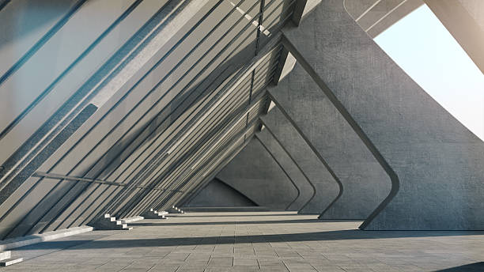
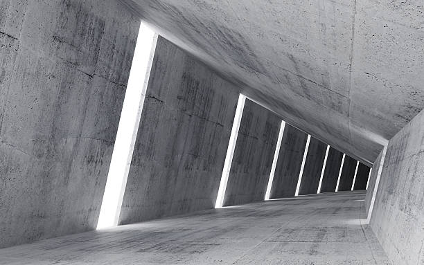
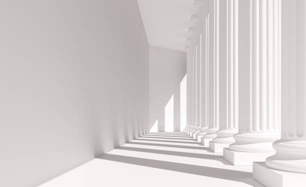
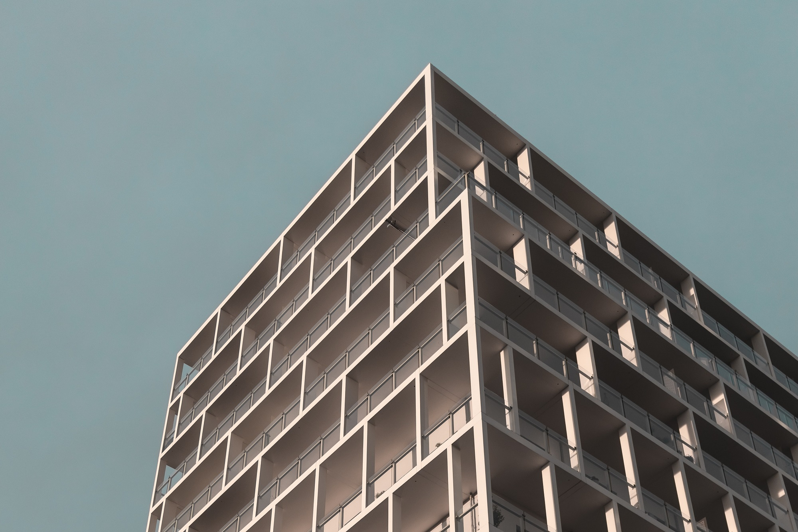

“La arquitectura es el encuentro de la luz con la forma”
Charles-Édouard Jeanneret-Gris, arquitecto y teórico de la arquitectura.
En Doble A aspiramos a la innovación constante de la fotografìa arquitectónica.
Registramos y retratamos diferentes espacios y edificaciones creadas por el hombre.
Especializados en constructoras, urbanistas y desarrolladores inmobiliarios.

Agudizamos el lente en perspectivas



Vemos la belleza en toda estructura.
